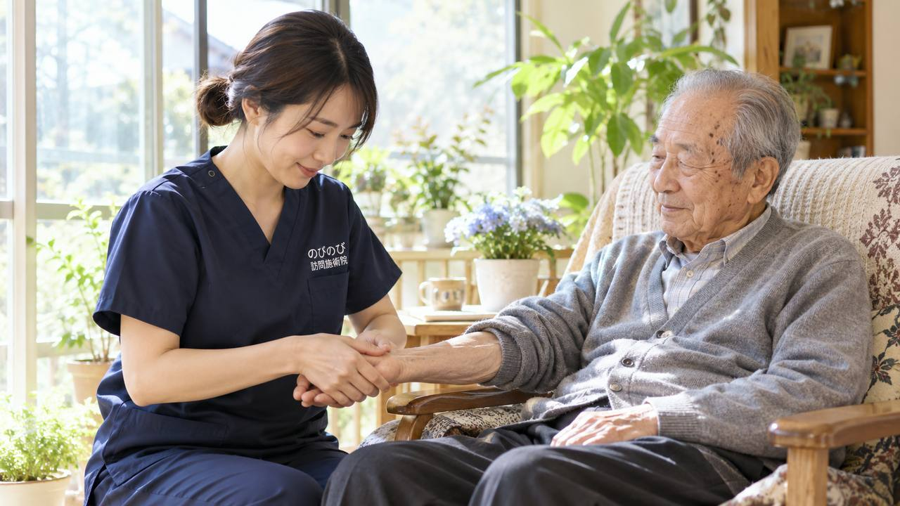

在宅で脳梗塞のあとを支えていて、先に限界が来るのは介助する側の体だということがあります。起き上がり、立ち上がり、着替え、トイレ。一日に何度も手を貸すうちに、支える人の腰と肩が痛み出す。そうなると在宅そのものが続かなくなります。茨木市でこれから在宅を続けていく方、そして介助されているご家族に向けて、訪問鍼灸マッサージが両方の負担に何をできるのかを書きます。
この記事のポイント
麻痺そのものを施術で元に戻すことはできません。治療とリハビリの方針は医師と療法士が中心です。訪問鍼灸マッサージが受け持つのは、麻痺した側の筋肉の緊張をやわらげること、動かさない時間から固くなっていく関節を保つこと、そして介助しやすい体を保つことです。手足の力が急に落ちた、言葉が出にくくなった、顔の片側が動かないといった変化があればすぐに救急へ。医師の同意があれば医療保険が使え、1割負担で1回約395円（総額3,950円）。介護保険の限度額とは別枠です。
茨木市で、ご家族の手が足りなくなる前に
在宅を続けられるかどうかは、ご本人の状態だけで決まりません。介助する人の体がもつかどうかも、同じくらい効いてきます。腰を痛めた、肩が上がらなくなった、夜に何度も起きるので眠れない。こうした理由で在宅が続かなくなる場面を、訪問の現場では見てきます。
だから施術では、ご本人の体をゆるめることと、介助しやすい体にしておくことを同じ目的として扱います。肩と股関節が動くようになると、腕を通す、体を起こす、向きを変えるという動作が軽くなります。これはご本人にとっても、支える側にとっても楽になることです。
訪問リハビリが入っていればそこが受け皿になりますが、回数に限りがあったり期間が区切られていたりします。その空いた時間に、週に何回か手を入れる人がいるということ自体に意味があります。ご家族だけで抱えなくてよくなるという面もあります。
体が固いまま介助すると、力がいります
ひじが曲がったまま固まっていれば、袖を通すのに難儀します。股関節が固ければ、ベッドから足を下ろすだけで時間がかかります。足首が下を向いたまま戻らなければ、立つときに踏ん張れません。
これは根性や技術の問題ではなく、関節がどこまで動くかという話です。動く範囲が広ければ、同じ介助が軽く済みます。ですから施術のあとには、日常の動作につながる形で関節を動かす練習も重ねます。手すりを持って立つ、ベッドから足を下ろす、着替えのときに腕を通す。無理に伸ばすことはしません。
どこを持つと動きやすいか、どの順番で起こすと楽かも、うかがったときにお伝えできます。ご家族が立ち会える日に一緒に見ていただく形でも、ご本人おひとりのところへうかがう形でも続けられます。動かさない時間が関節を固くしていく仕組みは「関節の拘縮・寝たきりを防ぎたい方へ」で詳しくご紹介しています。
麻痺のある側に、何ができて何ができないか
できないことを先に書きます。脳の損傷そのものを治すことはできません。麻痺が消えるわけでもありません。何回受ければ動くようになる、と言うこともできません。効果の感じ方には個人差があります。
できるのは、麻痺した側の筋肉の緊張をやわらげること、関節を動かせる範囲を保つこと、使いすぎている反対側の負担を軽くすることです。麻痺のある側は、力が入らないのに筋肉が張りつめるという状態になりやすく、そこに痛みが出ることもあります。肩が痛む、ふくらはぎが突っぱる、手指が開きにくい。ここに鍼とお灸で働きかけます。
動くほうの側も見ます。そちらの手足で全部をこなそうとすると、健側の肩と腰が痛み出します。ここが痛むと今度は起き上がれなくなり、動く機会がさらに減ります。麻痺していないほうが痛いというご相談は、実際によくいただきます。
言葉が出にくい方とのやり取り
脳梗塞のあと、言葉が出にくくなる方がおられます。聞いて分かっておられるのに、うまく言えない。痛いかどうかを尋ねても、返事に時間がかかる。こういうときに急かすと、伝えることそのものをあきらめてしまいます。
うかがったときは、返事を待ちます。はいといいえで答えられる形に聞き方を変える、指で示していただく、表情を見る。前回と比べて力の入り方がどうか、触ったときに引っ込めるかどうか。こちらが体から読み取る部分も増やします。
ご家族から見ていただいて、ふだんと違う様子があれば教えていただけると助かります。同じ人に毎回来てもらうことの利点は、こういう積み重ねができるところにあります。
医療保険のリハビリとの使い分け
ここは分かりにくいところなので、はっきり書きます。同一の部位について、医療保険のリハビリと鍼灸を同じ月に同時に算定することはできません。訪問リハビリや通院でのリハビリを医療保険で受けておられる場合、その部位の鍼灸は重ねられないということです。
一方で、介護保険で受けている訪問リハビリやデイケアとは別枠です。介護保険の支給限度額を使わないので、ほかのサービスの枠を減らすこともありません。限度額をぎりぎりまで使っておられる方でも、ほかを削らずに足せます。
どちらの保険で何を受けているかは、ご本人やご家族が把握しきれていないことも多いところです。ご相談のときに一緒に整理しますので、分からないままでご連絡いただいて構いません。担当のケアマネジャーがおられれば、そちらと確かめながら進めます。制度の切り分けは「訪問マッサージと訪問鍼灸の違い」にもまとめました。
茨木市のどこへでも、費用のこと
うかがう範囲は茨木市内の全域です。JR茨木・阪急茨木市の周辺はもちろん、南茨木、総持寺、沢良宜、玉櫛、水尾、春日や豊川、安威、そして彩都や山手台のほうまで伺います。有料老人ホームやサービス付き高齢者向け住宅に入居されている方への訪問も承っています。エリア内であれば別途の出張費・交通費はかかりません。市内全体のご案内は「茨木市の訪問鍼灸マッサージ」で詳しくご紹介しています。
うかがったときは、まずその日の様子をうかがい、血圧と体温を測ります。脳梗塞のあとの方は血圧の管理が大事なので、ここは毎回欠かしません。数字を見て、その日は施術を控えたほうがいいと判断することもあります。麻痺にともなうこわばりや、それに伴う痛みについて医師が施術を必要と認めて同意した場合、はり・きゅうの施術が医療保険の対象になります。
費用は1回の総額3,950円に対し、自己負担は1割の方で約395円。週2回なら月あたりおよそ3,160円が目安です。要介護認定は必要ありません。内訳は料金はいくら？医療保険の自己負担額と仕組み、同意書の頼み方は「かかりつけ医への頼み方と流れ」をご覧ください。うかがうのは平日の9時から18時まで、土曜・日曜・祝日はお休みです。はじめての方には無料体験をご用意しています。
よくある質問
麻痺は鍼灸で治りますか？
麻痺そのものを元に戻すことはできません。できるのは、麻痺した側の筋肉の緊張をやわらげること、関節を動かせる範囲を保って固まるのを防ぐこと、使いすぎている反対側の負担を軽くすることです。感じ方には個人差があります。
介助がきつくなってきました。相談だけでもできますか？
できます。どこを持つと動きやすいか、どの順番で起こすと楽かといったことも、うかがったときにお伝えできます。体が固いまま介助すると力がいるので、そこをゆるめること自体が介助の負担を軽くします。
言葉が出にくいのですが、施術は受けられますか？
受けられます。はいといいえで答えられる形に聞き方を変えたり、指で示していただいたりしながら進めます。返事を急かすことはしません。ふだんと違う様子があればご家族から教えていただけると助かります。
麻痺していないほうの肩が痛みます。これも見てもらえますか？
見ます。動く側で体を支え続けると、その肩と腰に負担が集まります。健側の痛みは珍しいことではなく、そこが痛むと動く機会がさらに減るので、放っておかないほうがよい部分です。
訪問リハビリを受けています。併用できますか？
どちらの保険で受けておられるかによります。医療保険のリハビリの場合、同一部位について鍼灸を同じ月に同時に算定することはできません。介護保険の訪問リハビリであれば別枠なので併用できます。分からない場合は一緒に整理します。
血圧が高めなのですが大丈夫ですか？
毎回うかがったときに血圧を測り、施術を進めていい状態かを確かめます。数字によっては、その日は控えることもあります。主治医から指示が出ている場合は、その範囲でお受けします。
1回いくらかかりますか？
自宅での1回の施術は総額3,950円で、1割負担の方はおよそ395円が目安です。週1回ならひと月の自己負担はおよそ1,580円です。手技や身体を動かす運動は鍼灸に加えるケアとして行い、別途の料金はいただきません。
茨木市内ならどこまで来てもらえますか？
茨木市は全域が対応エリアです。JR茨木・阪急茨木市駅の周辺から、総持寺・南茨木・沢良宜、春日・豊川・安威、彩都・山手台のような北部の住宅地まで伺っています。施設に入居されている方のところにもうかがいます。